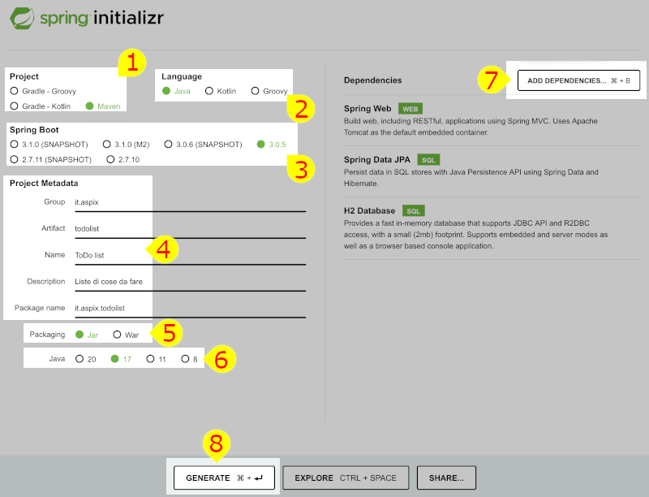

Trattandosi di un framework faremo la sua conoscenza direttamente utilizzandolo! Per evitare di confonderli con quelli di HTTP i "metodi" degli oggetti Java verranno chiamati "funzioni".
Configurare la prima applicazione Spring
Quella che ci apprestiamo a realizzare è la parte server (o backend) di una semplice applicazione per gestire una lista di cose da fare ( "todo" ). Il sistema gestisce più liste ma di un solo utente: deve permettere sia di visualizzare le liste che di fare ricerche che di inserire nuove cose da fare nelle liste che di cancellare delle voci.
Per rappresentare le informazioni forzando un po' la mano (magari uno schema ER ben fatto prevederebbe più relazioni) utilizziamo un singolo oggetto (e quindi avremo una singola tabella) che rappresenta una cosa da fare con le seguenti proprietà:
- lista: un modo per identificare diverse categorie di cose da fare, es: "casa" o "lavoro"
- cosa: è la cosa che deve essere fatta, es: "completare la presentazione"
- fatto: un booleano per dire se la cosa è stata fatta o meno
In questo elenco manca qualcosa per essere una tabella utile: cosa?
Le richieste verso il server verranno fatte tutte via HTTP utilizzando i vari metodi possibili
in riferimento alle nostre cose da fare: ad esempio potremmo mandare una richiesta per cancellare
una specifica cossa da fare indicandone il suo id e utilizzando il metodo DELETE
di HTTP. Le singole "cose da fare" saranno mappate da delle URL, un esempio chiarirà il tutto:
http://localhost:8080/todo/4 è la "cosa da fare" che ha come id 4.
Se la richiesta HTTP verso la URL in esempio
verrà inviata utilizzando il metodo GET si avrà
come risposta la rappresentazione JSON della cosa da fare, se la richiesta sarà
inviata con DELETE la risorsa verrà cancellata, con PUT
potremmo inviare nel body della richiesta eventuali variazioni da applicare alle
"cosa da fare" numero 4.
Tutti gli oggetti verranno scambiati dal client al server e viceversa rappresentandoli in JSON... perché è il metodo più utilizzato e perché Spring Boot lo fa in automatico.
Una scelta però la lasciamo aperta: il database. Nel seguito di questo capitolo seguiremo per quanto riguarda il db due strade parallele, ovviamente una volta scelto ne va seguita una sola! I due percorsi si possono riconoscere dai relativi colori.
Questo percorso riguarda l'uso del database H2 che verrà incluso nell'applicazione e quindi non va installato a parte, percorso buono per fare delle prove. H2 gestirà il database in memoria, database che quindi verrà resettato ad ogni avvio del server. In questo caso non c'è un server da configurare
Questo percorso riguarda l'uso del server MariaDB (o volendo MySQL) che però deve essere già stato installato e configurato, è la strata che normalmente si segue in un progetto funzionante ma biosogna avere in esecuzione un server MariaDB/MySQL e saperlo configurare.
Il progetto
Creare un progetto Spring boot è davvero molto facile: si crea on-line con Spring initializr e poi si scarica. Qui sotto è riportato il progetto del tutto configurato, a seguire la descrizione di ogni parte.
- Project [1]
- il tipo di progetto che deve essere creato, nel nostro caso un progetto gestito da Maven
- Language [2]
- questo è piuttosto evidente: il linguaggio che vorremo usare per scrivere il codice
- Spring Boot [3]
- la versione di Spring Boot da utilizzare, in genere è una buona scelta per i nuovi progetti prendere l'ultima versione escludendo i vari SNAPSHOT e Milestone se non si è assolutamente sicuri di quel che si sta facendo
- Project Metadata [4]
- sono i dati descrittivi del progetto, gli stessi usati da Maven per identificarlo e descriverlo
- Packaging [5]
- il tipo di pacchetto che vogliamo venga prodotto: il "jar" contiene tutto quanto serve per essere avviato su una Java Virtiual Machine, il "war" va invece caricato su un application server tipo Tomcat
- Java [6]
- la versione di Java che vogliamo usare, qui mettere l'ultima potrebbe non essere una buona idea: nella figura sono presentate soltanto alcune versioni: 8, 11 e 17 sono versioni con supporto al lungo termine (meglio prendere l'ultima di queste se possibile) mentre la 20 è l'ultima versione uscita
- Dependencies [7]
- facendo click su questo pulsante si possono aggiungere le dipendenze al progetto,
a noi ne servono alcune che sono descritte qui sotto ma ne esistono tantissime:
- Spring Web: quello che tra le altre cose ci permette di creare servizi web di tipo REST e usare Tomcat
- Spring Data JPA: un modo semplice per comunicare con i database, serve poi un driver per un database specifico
- H2 Database: in questo caso come DB usiamo H2
- MariaDB driver: una liberia che consente di dialogare con un server MariaDB.
- GENERATE [8]
- click qui per scaricare un file zip che contiene tutto il progetto, questo file andrà poi scompattato e importato in Eclipse
IDE
Usiamo Eclipse (nella versione " Eclipse IDE for Enterprise Java and Web Developers") per cui è disponibile una estensione per Spring Boot: click sul menu "/help/Eclipse Marketplace..." e nella casella "find" scrivere Spring Tools e installare "Spring Tools 4", a questo punto verrà installata l'estensione.
Nota: nella scrittura di applicazioni Spring Boot è spesso necessario fermare e poi riavviare
le applicazioni: in Eclipse conviene usare

Configurazione del progetto
Ne serve pochissima, fa quasi tutto Spring da solo, anche regolandosi in base alle dipendenze, in pratica nel nostro caso la sola configurazione da fare riguarda l'accesso ai dati.
La configurazione va scritta nel file application.properties
che si trova nella cartella src/main/resources (è un file per il funzionamento
del programma e non per il test quindi sta in "main", non essendo un file java sta in resources).
Il formato del file è il solito nome_proprietà=valore, i commenti sono inseriti utilizzando il simbolo #.
Il file di configurazione qui sotto è per H2, ridotto al minimo:
# l'indirizzo del database a cui connettersi, il modo di scriverlo cambia da db a db spring.datasource.url=jdbc:h2:mem:todolist # serve soltanto per H2 o per gli altri database "in memory" # per cui se non si mette questa le tabelle vengono create al volo # all'avvio dell'applicazione in base agli oggetti che definiremo, siccome io # voglio creare le tabelle e inserire dei dati non voglio che queste # vengano create da Spring quindi metto questa riga, normalmente non serve spring.jpa.hibernate.ddl-auto=none # questa è soltanto per comodità visto che usiamo H2, questo db permette di # avere una console accessibile via web aggiungendo "/h2-console" # (una cosa tipo phpmyadmin) all'indirizzo del server # ad esempio: "http://localhost:8080/h2-console" spring.h2.console.enabled=true
database
Siccome utilizziamo H2 con un database in memoria
dobbiamo istruire il sistema per creare il database all'avvio.
Fortunatamente basta inserire un paio di file di configurazione
nella cartella src/main/resources, i file sono quelli qui sotto.
schema.sql
La creazione delle tabelle
CREATE TABLE todo(
id INTEGER NOT NULL AUTO_INCREMENT PRIMARY KEY,
lista VARCHAR(20),
cosa VARCHAR(200),
fatto BOOLEAN
);
data.sql
Per poter testare l'applicazioni farebbe comodo avere anche dei dati caricati nel db, facile: mettiamo le insert in questo file
INSERT INTO todo (lista, cosa, fatto) VALUES ('casa', 'pulire', false);
INSERT INTO todo (lista, cosa, fatto) VALUES ('casa', 'comperare fagioli', false);
INSERT INTO todo (lista, cosa, fatto) VALUES ('hobby', 'pagare palestra', true);
INSERT INTO todo (lista, cosa, fatto) VALUES ('hobby', 'pulire scarpe', true);
INSERT INTO todo (lista, cosa, fatto) VALUES ('lavoro', 'studiare Napoleone', false);
INSERT INTO todo (lista, cosa, fatto) VALUES ('lavoro', 'sconsegnare relazione', true);
INSERT INTO todo (lista, cosa, fatto) VALUES ('lavoro', 'pulire armadietto', false);
Il database è un server esterno (che magari qualcuno ha già configurato per noi), quel che abbiamo nei nel progetto Spring è semplicemente un modo per collegarci con lui. In particolare dobbiamo aver creato (usando phpMyAdmin o altro strumento):
- un database chiamato
todo - un utente chiamato
utentecon passwordchiavecon accesso al db - il database deve avere la tabella
todocon dei dati preinseriti, per comodità sono riportate sotto le istruzioni per crearlo e inserire i dati.
CREATE TABLE todo(
id INTEGER NOT NULL AUTO_INCREMENT PRIMARY KEY,
lista VARCHAR(20),
cosa VARCHAR(200),
fatto BOOLEAN
);
INSERT INTO todo (lista, cosa, fatto) VALUES ('casa', 'pulire', false);
INSERT INTO todo (lista, cosa, fatto) VALUES ('casa', 'comperare fagioli', false);
INSERT INTO todo (lista, cosa, fatto) VALUES ('hobby', 'pagare palestra', true);
INSERT INTO todo (lista, cosa, fatto) VALUES ('hobby', 'pulire scarpe', true);
INSERT INTO todo (lista, cosa, fatto) VALUES ('lavoro', 'studiare Napoleone', false);
INSERT INTO todo (lista, cosa, fatto) VALUES ('lavoro', 'sconsegnare relazione', true);
INSERT INTO todo (lista, cosa, fatto) VALUES ('lavoro', 'pulire armadietto', false);
Le impostazioni da inserire in application.properties sono queste:
# l'indirizzo del database a cui connettersi, il modo di scriverlo cambia da db a db, # in questo caso supponiamo che il server MySQL sia in esecuzione sullo stesso host # dell'applicazione Spring spring.datasource.url=jdbc:mariadb://localhost:3306/todo # soliti username e password per la connessione al db spring.datasource.username=utente spring.datasource.password=chiave
Avviare il server
Utilizzando Eclipse, una volta importato il progetto, bisogna trovare la classe
DemoApplication, fare click con il tasto destro sulla classe e poi
selezionare "Run as/Spring Boot App".
Se si usa il terminale (potrebbe essere utile in caso di problemi con Eclipse)
bisogna entrare nella cartella del progetto e poi usare il comando
mvn spring-boot:run (per fermarlo bisogna premere CTRL+c).
All'avvio Spring Boot stamperà diversi messaggi, quello sotto è un esempio leggermente formattato per evidenziare le cose che più ci interessano:
. ____ _ __ _ _ /\\ / ___'_ __ _ _(_)_ __ __ _ \ \ \ \ ( ( )\___ | '_ | '_| | '_ \/ _` | \ \ \ \ \\/ ___)| |_)| | | | | || (_| | ) ) ) ) ' |____| .__|_| |_|_| |_\__, | / / / / =========|_|==============|___/=/_/_/_/ :: Spring Boot :: (v3.2.4) 2024-03-23T19:02:12.335+01:00 INFO 35563 --- [demo] [ main] com.example.demo.DemoApplication : Starting DemoApplication using Java 21.0.2 with PID 35563 (/Volumes/ramdisk/demo/target/classes started by edoardo in /Volumes/ramdisk/demo) 2024-03-23T19:02:12.336+01:00 INFO 35563 --- [demo] [ main] com.example.demo.DemoApplication : No active profile set, falling back to 1 default profile: "default" 2024-03-23T19:02:12.529+01:00 INFO 35563 --- [demo] [ main] .s.d.r.c.RepositoryConfigurationDelegate : Bootstrapping Spring Data JPA repositories in DEFAULT mode. 2024-03-23T19:02:12.535+01:00 INFO 35563 --- [demo] [ main] .s.d.r.c.RepositoryConfigurationDelegate : Finished Spring Data repository scanning in 3 ms. Found 0 JPA repository interfaces. 2024-03-23T19:02:12.700+01:00 INFO 35563 --- [demo] [ main] o.s.b.w.embedded.tomcat.TomcatWebServer : Tomcat initialized with port 8080 (http) 2024-03-23T19:02:12.705+01:00 INFO 35563 --- [demo] [ main] o.apache.catalina.core.StandardService : Starting service [Tomcat] 2024-03-23T19:02:12.705+01:00 INFO 35563 --- [demo] [ main] o.apache.catalina.core.StandardEngine : Starting Servlet engine: [Apache Tomcat/10.1.19] 2024-03-23T19:02:12.752+01:00 INFO 35563 --- [demo] [ main] o.a.c.c.C.[Tomcat].[localhost].[/] : Initializing Spring embedded WebApplicationContext 2024-03-23T19:02:12.752+01:00 INFO 35563 --- [demo] [ main] w.s.c.ServletWebServerApplicationContext : Root WebApplicationContext: initialization completed in 401 ms 2024-03-23T19:02:12.799+01:00 INFO 35563 --- [demo] [ main] com.zaxxer.hikari.HikariDataSource : HikariPool-1 - Starting... 2024-03-23T19:02:12.868+01:00 INFO 35563 --- [demo] [ main] com.zaxxer.hikari.pool.HikariPool : HikariPool-1 - Added connection conn0: url=jdbc:h2:mem:e55b89e5-7a37-43b1-8790-d3e42c7a13be user=SA 2024-03-23T19:02:12.869+01:00 INFO 35563 --- [demo] [ main] com.zaxxer.hikari.HikariDataSource : HikariPool-1 - Start completed. 2024-03-23T19:02:12.884+01:00 INFO 35563 --- [demo] [ main] o.hibernate.jpa.internal.util.LogHelper : HHH000204: Processing PersistenceUnitInfo [name: default] 2024-03-23T19:02:12.899+01:00 INFO 35563 --- [demo] [ main] org.hibernate.Version : HHH000412: Hibernate ORM core version 6.4.4.Final 2024-03-23T19:02:12.908+01:00 INFO 35563 --- [demo] [ main] o.h.c.internal.RegionFactoryInitiator : HHH000026: Second-level cache disabled 2024-03-23T19:02:12.975+01:00 INFO 35563 --- [demo] [ main] o.s.o.j.p.SpringPersistenceUnitInfo : No LoadTimeWeaver setup: ignoring JPA class transformer 2024-03-23T19:02:13.100+01:00 INFO 35563 --- [demo] [ main] o.h.e.t.j.p.i.JtaPlatformInitiator : HHH000489: No JTA platform available (set 'hibernate.transaction.jta.platform' to enable JTA platform integration) 2024-03-23T19:02:13.101+01:00 INFO 35563 --- [demo] [ main] j.LocalContainerEntityManagerFactoryBean : Initialized JPA EntityManagerFactory for persistence unit 'default' 2024-03-23T19:02:13.117+01:00 WARN 35563 --- [demo] [ main] JpaBaseConfiguration$JpaWebConfiguration : spring.jpa.open-in-view is enabled by default. Therefore, database queries may be performed during view rendering. Explicitly configure spring.jpa.open-in-view to disable this warning 2024-03-23T19:02:13.269+01:00 INFO 35563 --- [demo] [ main] o.s.b.w.embedded.tomcat.TomcatWebServer : Tomcat started on port 8080 (http) with context path '' 2024-03-23T19:02:13.273+01:00 INFO 35563 --- [demo] [ main] com.example.demo.DemoApplication : Started DemoApplication in 1.06 seconds (process running for 1.201)
Ogni singola riga contiene una marca temporale (solitamente chiamato timestamp) dell'operazione, una versione contratta del nome della classe Java interessata e un messaggio: limitiamoci a leggere le due righe con la parte evidenziata.
- Starting DemoApplication using Java 21.0.2 with PID 35563
- il server è stato avviato usando la versione 21.0.2 di Java e il processo del server ha come id il numero 35563
- Tomcat started on port 8080 (http)
- il server è Tomcat e sta in ascolto sulla porta 8080 (detto in altri termini
se vogliamo far delle prove la url da usare dalla nostra macchina è
http://localhost:8080)
Nel caso sia stato correttamente configurato H2 tra i messaggi si troverà una riga particolare simile a questa:
2024-03-23T19:20:11.243+01:00 INFO 35819 --- [demo] [ main] o.s.b.a.h2.H2ConsoleAutoConfiguration : H2 console available at '/h2-console'. Database available at 'jdbc:h2:mem:todolist'
In questo caso potremmo connetterci a http://localhost:8080/h2-console per poter ispezionare il database,
nel form ci verrà richiesto un "JDBC URL" e dovremmo specificare jdbc:h2:mem:todolist,
nome utente è di default "sa" e la password è vuota.